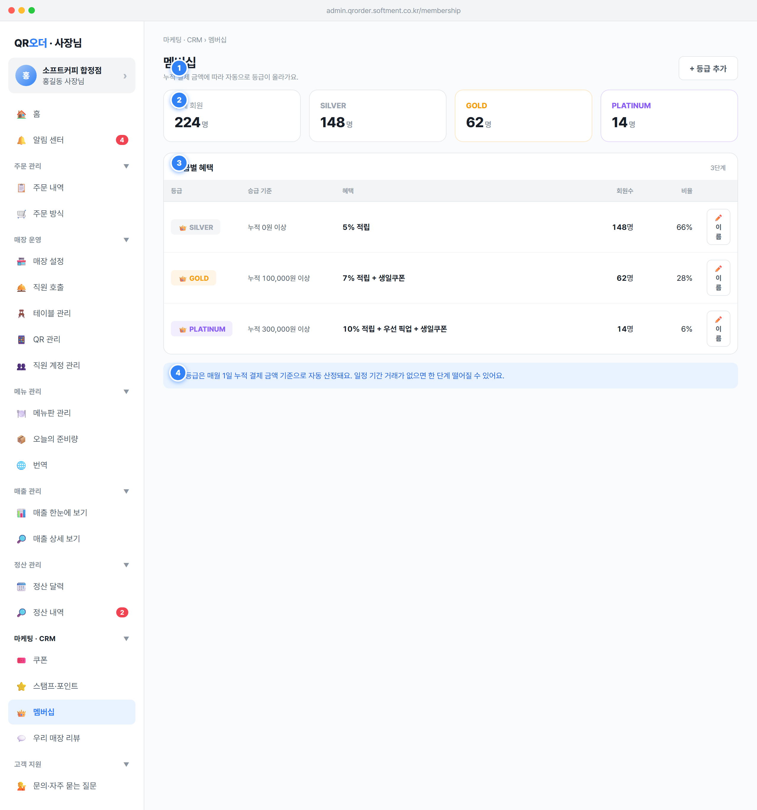

마케팅 · CRM › 멤버십, 제목 멤버십, 보조문구 "누적 결제 금액에 따라 자동으로 등급이 올라가요." 노출.+ 등급 추가 버튼으로 새 등급 단계를 추가(등급 체계 확장)하는 진입점 제공.alert('멤버십 등급 추가 (와이어프레임)') 플레이스홀더 — 정식 구현은 모달). 입력: 등급명(필수), 승급 기준 누적 결제액(원, 정수), 혜택 텍스트. 색상은 팔레트에서 자동/선택.MEMBERSHIP.tiers 배열에 추가하고 threshold 오름차순으로 자동 재정렬 후 화면 재렌더. 신규 등급 members 초기값 0.threshold 오름차순으로 유지(가장 낮은 단계 = 누적 0원 시작).MEMBERSHIP.tiers[] = {name:string, color:hex, threshold:int(원,≥0), benefit:string, members:int}.threshold는 0 이상 정수, 동일 threshold 중복 금지.POST /membership/tiers (owner 토큰 필요). 변경은 즉시 손님 앱의 등급 표시·적립율 계산에 연동.members 집계는 회원 누적 결제액 배치(핀 4)가 채우는 읽기 전용 파생값 — 추가 시점에는 0./membership 직접 접근 시 접근 차단 후 안내: "이 화면은 사장님 계정에서만 볼 수 있어요." (SPEC §1.6)."등급 이름을 입력해 주세요." / 중복 시: "이미 사용 중인 등급 이름이에요."threshold 음수·비정수 입력 시: "승급 기준 금액은 0원 이상 숫자로 입력해 주세요.""등급을 저장하지 못했어요. 잠시 후 다시 시도해 주세요." (spec/08-common 토스트·에러).전체 회원 + 등급 수만큼 등급별 카드. 사장님이 회원 규모와 등급 쏠림을 빠르게 파악하도록 함.m.tiers.reduce((s,t)=>s+t.members,0), 단위 명 표기.members 수치 표시. 카드 라벨은 등급 색상(t.color)·굵게, 테두리는 등급 색상 40% 투명도(${t.color}40).threshold 오름차순.MEMBERSHIP.tiers[].members 파생. 전체 = 등급별 합. API 성격: GET /membership/summary.members는 회원별 "이번 산정 주기 등급" 배치 결과의 등급별 count. 영업일/월 경계는 영업일 03:00 기준(SPEC §1.1)으로 산정한 "매월 1일" 스냅샷.color는 hex 문자열, 카드 테두리·라벨 색에 직접 바인딩.0명, 등급별 모두 0명 표시(부정문구 대신 자연스러운 0 노출).0명 정상 표시(빈 상태 별도 처리 불필요).등급별 혜택 + 부제 ${m.tiers.length}단계로 현재 등급 단계 수 표시.👑 이름 알약(pill)·등급색 배경.누적 {fmt(threshold)}원 이상 형식(천단위 콤마). 가장 낮은 단계는 누적 0원 이상(0원부터 시작).Math.round(members/totalMembers*100)%. 전체 0명이면 0%.renameMembershipTier(idx) 호출 — prompt로 새 이름 입력받아 trim 후, 빈값/동일/중복 검증 통과 시 tier.name 갱신 후 재렌더. (정식 구현은 prompt가 아닌 인라인 편집 모달로 승급기준·혜택까지 편집 권장.)threshold 오름차순 고정.tier{name, threshold, benefit, members, color}. 비율 = members/Σmembers 반올림.fmt()로 금액 천단위 콤마 포맷. threshold 단위는 원(정수).PATCH /membership/tiers/{id} (owner)."등급 이름은 비워 둘 수 없어요." (코드 실측 문구)."'{입력값}'은(는) 이미 사용 중인 등급 이름이에요." (코드 실측 문구).0% 표시(0 나눗셈 가드 totalMembers?…:0)."등급은 최소 한 단계가 필요해요." 로 삭제 차단 권장."💡 등급은 매월 1일 누적 결제 금액 기준으로 자동 산정돼요. 일정 기간 거래가 없으면 한 단계 떨어질 수 있어요."threshold 이상이면 해당 등급으로 상향. 강등: 정책상 일정 기간 무거래 시 한 단계 하향.Payment.status=paid 합계 기준이며, 환불은 원거래일 매출에서 차감(SPEC §1.5)하므로 누적액에서도 차감 반영.refunds.original_paid_at 영업일 기준 차감)을 반영 — 주문 취소(미결제)는 애초 누적에 포함되지 않음(제품노트: paid 여부로 구분).round(taxable/11), SPEC §1.3) — 누적은 결제 총액 기준.tiers[].members(핀2·핀3) 및 손님 등급/적립율에 연동. API 성격: 정기 배치 recalcMembershipTiers().threshold와 정확히 동일 금액): "이상" 기준이므로 해당 상위 등급으로 편입.